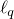

|
Yangyang Xu's Publication
Google scholar profile
Preprints
Y. Xu. Hybrid Jacobian and Gauss-Seidel proximal block coordinate update methods for linearly constrained convex programming. Submitted, 2016.
Y. Xu. Accelerated first-order primal-dual proximal methods for linearly constrained composite convex programming. Submitted, 2016. [arXiv]
X. Gao, Y. Xu and S. Zhang. Randomized primal-dual proximal block coordinate updates. Submitted, 2016. [arXiv]
D. Oliveira, H. Wolkowicz and Y. Xu. ADMM for the SDP relaxation of the QAP. Submitted, 2015. [code]
Y. Xu. On the convergence of higher-order orthogonality iteration. Submitted, 2015. [arXiv] [Slides]
Y. Xu and W. Yin. A globally convergent algorithm for nonconvex optimization based on block coordinate update. Submitted, 2014. [arXiv]
J. Shi, Y. Xu and R. Baraniuk. Sparse bilinear logistic regression. Submitted, 2014. [arXiv]
Published or accepted
2016
Y. Xu. Fast algorithms for higher-order singular value decomposition from incomplete data. Journal of Computational Mathematics, 2016. [arXiv] [code]
Z. Peng, Y. Xu, M. Yan and W. Yin. ARock: an algorithmic framework for asynchronous parallel coordinate updates. SIAM Journal on Scientific Computing, 2016. [arXiv] [code]
Z. Peng, T. Wu, Y. Xu, M. Yan and W. Yin. Coordinate Friendly Structures, Algorithms and applications. Annals of Mathematical Sciences and Applications, 1(1), pp. 57–119, 2016. [arXiv]
Y. Xu and W. Yin. A fast patch-dictionary method for whole image recovery. Inverse Problems and Imaging, 10(2), 2016. [code] [arXiv]
N. Zhou, Y. Xu, H. Cheng, J. Fang and W. Pedrycz. Global and local structure preserving sparse subspace learning: an iterative approach to unsupervised feature selection. Pattern Recognition, 53, pp. 87–101, 2016. [arXiv]
2015
Y. Xu and W. Yin. Block stochastic gradient iteration for convex and nonconvex optimization. SIAM Journal on Optimization, 25(3), 1686–1716, 2015. [pdf] [demo]
[Slides]
Y. Xu, R. Hao, W. Yin and Z. Su. Parallel matrix factorization for low-rank tensor completion. Inverse Problems and Imaging, 9(2), 601–624, 2015. [pdf] [code]
Y. Xu. Alternating proximal gradient method for sparse nonnegative Tucker decomposition. Mathematical Programming Computation, 7(1), 39–70, 2015. [code]
Y. Xu, I. Akrotirianakis and A. Chakraborty. Proximal gradient method for huberized support vector machine, Pattern Analysis and Applications, 2015. [pdf]
Y. Xu, I. Akrotirianakis and A. Chakraborty. Alternating direction method of multipliers for regularized multiclass support vector machines. Lecture Notes in Computer Science, 2015. [arXiv]
2014
Y. Xu, W. Yin and S. Osher. Learning circulant sensing kernels. Inverse Problems and Imaging 8(3), 901–923, 2014. [pdf][code]
2013
Y. Xu and W. Yin. A block coordinate descent method for regularized multi-convex optimization with applications to nonnegative tensor factorization and completion. SIAM Journal on imaging sciences, 6(3), pp. 1758–1789, 2013. [code]
M. Lai, Y. Xu and W. Yin. Improved iteratively reweighted least squares for unconstrained smoothed  minimization. SIAM Journal on Numerical Analysis, 51(2), pp. 927–957, 2013. [code]
2012
Q. Ling, Y. Xu, W. Yin and Z. Wen. Distributed low-rank matrix completion. (ICASSP), pp. 2925–2928, 2012.
Y. Xu and J. Cui. Multitask -Vehicle Exploration Problem: complexity and algorithms. Journal of Systems Science and Complexity, pp. 1080–1092, 2012.
2011
Y. Xu, W. Yin, Z. Wen and Y. Zhang. An alternating direction algorithm for matrix completion with nonnegative factors. Journal of Frontiers of Mathematics in China, Special Issues on Computational Mathematics (Springer), pp. 365–384, 2011. [code] [arXiv]
|